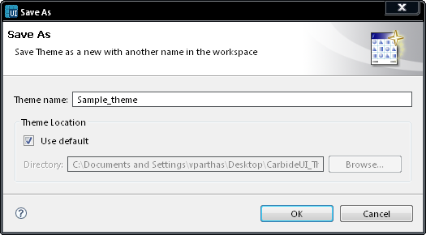

Saving a theme under a different name
You can create a copy of a theme by saving it under a different name.

Figure: Saving Under a
different name
- In the menu bar, select File
-> Save As.
- In the Theme name field, enter the name you want to save the theme as.
- To choose the file location for the copy:
- If you want to use the current workspace, in the Theme location field, make sure the Use default box is checked.
- If you want to choose a different location, in the Theme location field, uncheck the Use default box, browse to the
desired location and click OK.
- Click OK
Note: You can also use the New
Theme window to copy an existing theme. This way, no changes are made
to the original theme.